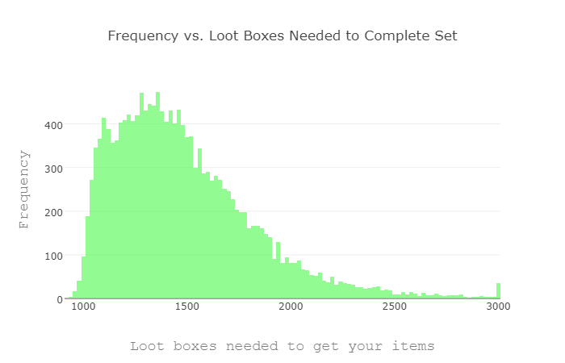
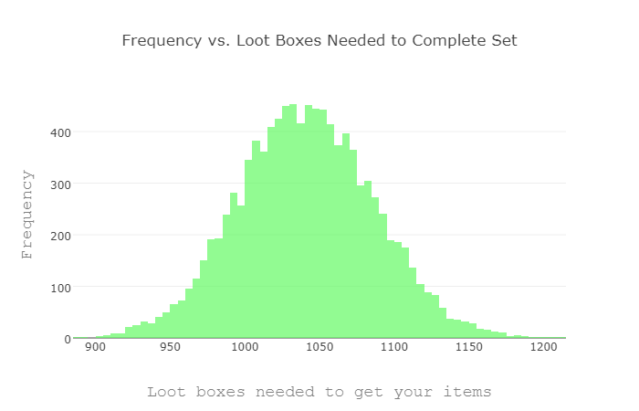
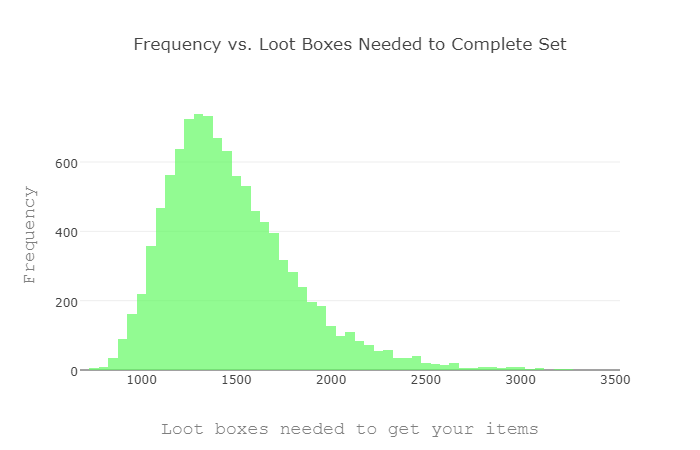
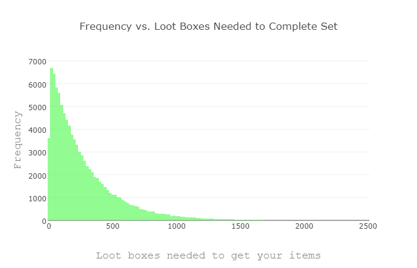

IMPORTANT NOTE: On July 27, 2017, the developers changed how the loot boxes in Overwatch work. All the results on this page are for the old system. Many games have loot box systems and they are all different. This analysis of the original loot box system is still relevant because other games may have similar systems. Analysis of the new system is on this page. The page about cost and time to get loot boxes is also relevant to the new system.
Common Questions Answered with the Loot Box Simulation Tool
Part 3: Results for the old loot box system
The tool works by simulating a player opening many loot boxes until they get a user-defined set of items. The result of each simulation is a distribution of how many loot boxes players need to open to get that particular set of items. The easiest way to visualize this data is with a histogram.
The simulation outputs the mean, median, and 90% range of the data. The median of the distribution can be thought of as the point where 50% of all players would have gotten that item set. In symmetric distributions, the mean and median are the same. But in asymmetric distributions, the mean may be quite different. Therefore, if the mean is much different than the median, then the distribution may be asymmetric. The 90% range gives the range of loot boxes where 90% of the players has gotten the item set. This gives a reasonable range between.
As I discuss here, it is likely that there is a pity timer in Overwatch, but it has not been proven (as in Hearthstone). A pity timer would reduce the variance (make the 90% range smaller) but not change the median.
How many loot boxes does it take to get every item?
The median number of loot boxes to get all items is 1485 and the 90% range is 1066–2142. You can see this graphically in the figure below.

This graph has an interesting shape, but it can be explained simply. There are two distributions here. One set of players waiting to get their last icon (the long tail) and another set of players waiting to buy their last item (the peak on the left). A reddit user named Alp_PS2 made an interesting post to Reddit and made a graph that shows the two distinct population shapes.
{kind=link}
To reproduce this graph, click here, change the drop-down menu to "EVERYTHING" (at the bottom), click the "all" link above the "want it" column, click on "simulation options" at the very top, change "Max time (sec):" to 15, change the "Number of histogram bins:" to 125, click on "start simulation", and click on "continue simulation" until the plot is smooth.
How many loot boxes to get every item not including icons?
The median number of loot boxes to get all items except icons is 1042 and the 90% range is 967–1120. You can see this graphically in the figure below.

As you can see, this distribution is symmetric, unlike the plot for all items including icons. The bump in the plot for all items including icons is around 1042 boxes.
To reproduce this graph, click here, change the drop-down menu to "EVERYTHING" (at the bottom), click the "filters" link at the top of the page, uncheck "icons", click the "all" link above the "want it" column, click on "simulation options" at the very top, change "Max time (sec):" to 15, click on "start simulation", and click on "continue simulation" until the plot is smooth.
How many loot boxes to get one specific item?
Starting with no items and no gold, it takes 31 boxes to get enough gold for one randomly selected legendary, 9 for an epic, 4 for a rare, and 3 for a common.
Starting with about half of the items, it takes 20 boxes to get the gold for a legendary, 5 for an epic, 2 for a rare, and 1 for a common.
How many loot boxes does it take to get every icon?
This is an interesting question because it is similar to a classic statistical problem called the Coupon Collector problem. The Coupon Collector problem asks "if you are given a random coupon after making a purchase from the grocery store, and there are N coupons in total, how many purchases would you need to make to collect all N coupons?" This is a rather well studied problem (1, 2, 3) and a good approximation for the expected number of purchases is:
$$N(\ln(N)+0.5772)$$
Where N is the number of coupons. Since this problem has an analytical solution, we can compare the analytical result to our simulation.
In Overwatch, there are 127 icons and plugging this in to the equation above we get 688. That means that it typically takes opening 688 icons to get a full set.
So, let's compare that to the simulation. This simulation selects icons as "want it" and no other items. After running for a few minutes, we get a median of 1419 boxes, and a 90% range of 1026–2124.

This median of 1419 is different from the analytical solution of 688 because that is the number of loot boxes opened, not the number of icons opened. Each loot box does not have exactly one icon in it. The number of loot boxes opened must be converted to number of icons received.
First, to convert "number of loot boxes" to "number of items" multiply by 4. Second, calculate the number of rares by multiplying the number of items by the probability of getting a rare item drop (0.2741 according to Table 1). Finally, calculate the probability that a rare item is going to be an icon by multiplying the number of rares by the fraction of rares that are icons (127/295 or 0.4305). Therefore, we get
$$1419\times 4\times 0.2741\times 0.4305=670$$
icons which is a 2.6% difference from the analytical value of 688.
How many loot boxes to get one specific icon?
Many players have a particular favorite icon that they want. How many loot boxes will it take to get that one icon?
This is actually a subset of the coupon collector problem. The odds of NOT getting your icon are 126/127, and the odds of not getting your icon in N "icon openings" is
$$P=\left(\frac{126}{127}\right)^N$$
We can set the probability of getting your icon to 50% and solve and we get N=88 icon openings. To convert "icon openings" to "loot box openings" we reverse the process above and get
$$88/0.2741/0.4305/4=186$$
loot boxes. We can solve for the probability of 0.05 and 0.95 to calculate the number of loot boxes that 90% of the population will open to get that one specific icon and we get 14 and 803 boxes.
In order to get one specific icon you need to open between 6 and 379 loot boxes on average. The unluckiest 1% of the population will take more than 1234 loot boxes to get their desired icon.
There are 35 million Overwatch players. A one in 35 million chance of something happening seems small, but when there are 35 million users, that event may occur. There is a one in 35 million chance that it will take 4655 loot boxes to get that one icon. The Coupon Collector problem is very harsh on some people.
The numbers above are just from pure math, not the simulation. We can check if the simulation is giving us reasonable results by making the set of items needed to just be one random icon. The results of the simulation are in the figure and table below.

| Parameter | Theoretical value | Simulation value | Percent difference |
|---|---|---|---|
| Median | 186 | 189 | 1.6% |
| Top 5% | 14 | 15 | 7.1% |
| Bottom 5% | 803 | 820 | 2.1% |
Table 2 — Comparing the simulation results to expected values based on statistics
The values match within one box or less than 3%. Checking that a simulation matches a simple, theoretical case is a good check that the simulation is working properly. The values would likely match exactly with many more iterations.
What is the best strategy for spending credits?
If you are trying to collect all items, the best strategy for spending your credits is to wait until you have enough credits to buy everything. This is because if you buy an item and then get it in the next loot box, you have essentially wasted 80% of the credits used to purchase that item. By default, the tool assumes an optimal buying strategy. However, this can be changed in the "spending strats" menu. The four options are optimal spending, buy expensive items when you can, buy cheap items when you can, and don't buy anything.
The effects of using sub-optimal spending strategies by running the tool on the full set of items (without icons) using each of these strategies. To buy all items (not including icons) it takes:
- 1042 with a 90% range of 970–1114 if you only use credits to buy items when you have a complete set
- 1264 with a 90% range of 1178–1348 if you use credits to purchase the most expensive items when possible
- 1341 with a 90% range of 1245–1446 if you use credits to purchase the least expensive items when possible
What is the effect of a higher refund?
The refund for a duplicate item is rather small, only one fifth of the value of the original item. How much faster would one be able to complete a full set of items if the refund was more generous? This can be tested by changing the "refund multiplier" in the options of the tool. To complete a full set of items not including icons it takes:
- 1042 loot boxes with a refund of one fifth (refund multiplier is 1.00)
- 988 loot boxes with a refund of one fourth (refund multiplier is 1.25)
- 918 loot boxes with a refund of one third (refund multiplier is 1.67)
- 811 loot boxes with a refund of one half (refund multiplier is 2.50)
- 640 loot boxes with a full refund (refund multiplier is 5.00)
- 1428 loot boxes with no refund (refund multiplier is 0.00)
Larger refunds would benefit more casual players who would likely use credits to buy the one specific item they really want. In the new system, there are almost no duplicates given.
- 20 loot boxes with a refund of one fifth (refund multiplier is 1.00)
- 18 loot boxes with a refund of one fourth (refund multiplier is 1.25)
- 16 loot boxes with a refund of one third (refund multiplier is 1.67)
- 13 loot boxes with a refund of one half (refund multiplier is 2.50)
- 8 loot boxes with a full refund (refund multiplier is 5.00)
- 34 loot boxes with no refund (refund multiplier is 0.00)
Comparing these results to other posts
This post by The Tastiest Tuna is a very interesting analytical approach to estimating how many loot boxes the typical user takes to open every item. TTT calculated that a typical full set of items would take 888 loot boxes, not considering icons. This was before several heroes were released and the number of cosmetics have increased. Updating with the same number of possible items as this project, I get 1077 loot boxes. This matches VERY closely with the estimate of 1042 from the tool.
This post by mynameismunka is a really good post. It is also my post. In that post, I included event items which is why the estimates are all slightly higher.
This post by Alp_PS2 is another monte carlo simulation to complete a set of items. That post explained the shape of the histogram for the simulation of trying to collect all items. The median and top 90 percent values match quite well:
| Parameter | My Value | Alp_PS2's Value | Percent difference |
|---|---|---|---|
| Median | 1485 | 1409 | 5.1% |
| Top 5% | 1066 | 1097 | 2.9% |
| Bottom 5% | 2142 | 2114 | 1.3% |
Table 3 — Comparing Alp_PS2's simulation with this one
There is really no difference in the techniques between these two posts, so the results should be very close. However, there is one difference. The number of items of each rarity is different. Alp_PS2 counted 857 commons, 168 rares, 128 icons, 236 epics, and 100 legendary items whereas I counted 823 commons, 168 rares, 127 icons, 234 epics, and 99 legendary items. This difference in item count could account for the difference in the median and 90% range.